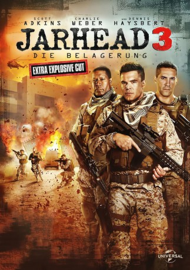

#3794 Jarhead 3 - Die Belagerung
Alternativ: Jarhead 3: The Siege
 
 IMDB-Wertung: 5.2 / 10
IMDB-Wertung: 5.2 / 10  Metascore: 0
Metascore: 0 
Corporal Evan Albright (Charlie Weber) ist einer elitären Marine-Gruppe beigetreten, um die Welt zu retten und mitten im Geschehen dabei zu sein nicht notwendigerweise in der Reihenfolge. Schon bei seinem ersten Auftrag verweist die Truppe alsbald zu zankenden Gate-Groupies, die ihre Arbeitszeit mit dem Zocken von Videospielen füllen. Dabei sollten sie eigentlich die US-Botschaft in einer scheinbar sicheren Hauptstadt im Nahen Osten sichern. So werden Albright und seine Kollegen unvorbereitet erwischt, als gut ausgebildete und bewaffnete Militante zum Überraschungsangriff blasen, um einen Informanten im Gebäude zu töten. Aus ihrer Routine gerissen muss die stark unterlegene Marine-Elite all ihren Mut und die nötige Feuerkraft aufbringen, um im plötzlich über sie hereinbrechenden Krieg eine Chance zu haben.
Jahr: 2016
Dauer: 88 Minuten
FSK: 16
Land: USA Studio: Universal PicturesTonspuren: DTS - ,
Untertitel: Deutsch,
Auflösung: 1080p (1920x816) Größe: 4556 MB
Genre: Action, Drama, Krieg
Regisseur: William Kaufman
Drehbuch: Krzysztof Kieslowski
Soundtrack:
Darsteller:
- Charlie Weber als Evan Albright
 Scott Adkins als Gunny Raines
Scott Adkins als Gunny Raines- Erik Valdez als Lopez
 Dante Basco als Blake
Dante Basco als Blake- Sasha Jackson als Olivia Winston
 Dennis Haysbert als Major Lincoln
Dennis Haysbert als Major Lincoln Stephen Hogan als Ambassador Dan Cahill
Stephen Hogan als Ambassador Dan Cahill Hadrian Howard als Khaled
Hadrian Howard als Khaled- Romeo Miller als Sunshine
- Ed Spila als Kraus
- Jay Moses als Comm Specialist
- Tom Ainsley als Hansen
- Joe Corrigall als Stamper
- Charlie de Melo als Jamal
- Kalina Stoimenova als Rashmi
- Vlado Mihailov als Mohammed
- Denislav Mitev als Dracula
- Raina Karayaneva als Gunny's girl
Datei: X:\3-Trilogie(G-M)\Jarhead\Jarhead 3 - Die Belagerung (2016, FSK16, 1920x816).mkv seit 14.06.2016
Festplatte: HD Collection-2(A-Z)-3(A-M)
 Alle Filme aus Gruppe '3-Trilogie(G-M)\Jarhead'
Alle Filme aus Gruppe '3-Trilogie(G-M)\Jarhead'